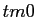
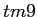
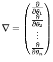
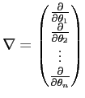

Next: Construction of the values, Up: The four parameter combinations Previous: Optimisation of the diffusion Contents Index
The global model is defined as
|  | (theparentequation.8) |
where  is the residue index and
is the residue index and  is the total number of residues used in the analysis. This is the most complex of the four categories as both diffusion tensor parameters and model-free parameters of all selected residues are optimised simultaneously. The dimensionality of the model
is the total number of residues used in the analysis. This is the most complex of the four categories as both diffusion tensor parameters and model-free parameters of all selected residues are optimised simultaneously. The dimensionality of the model
 is much greater than the other categories and is equal to
is much greater than the other categories and is equal to
|  | (theparentequation.9) |
where
is the number of model-free parameters for the residue  and is equal to

, the number six corresponds to the maximum dimensionality of
and is equal to

, the number six corresponds to the maximum dimensionality of
 , and the number five corresponds to the maximum dimensionality of
, and the number five corresponds to the maximum dimensionality of
 .
.
Edward d'Auvergne 2008-10-09